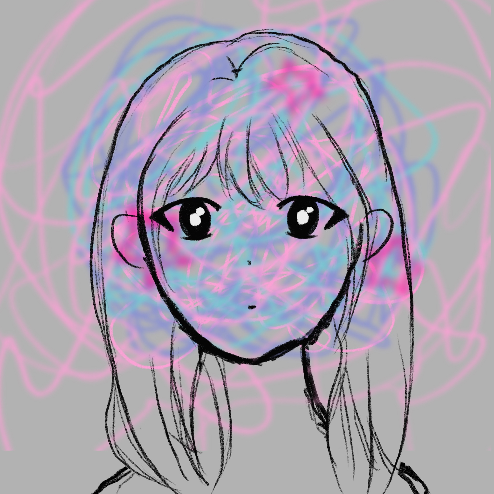
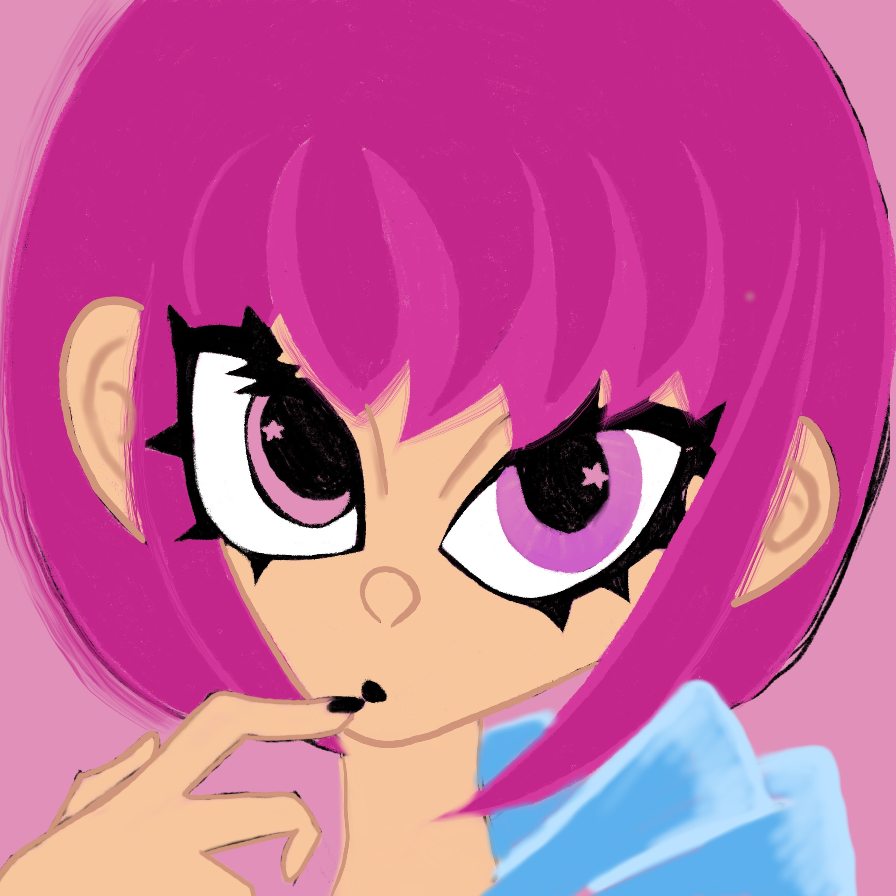
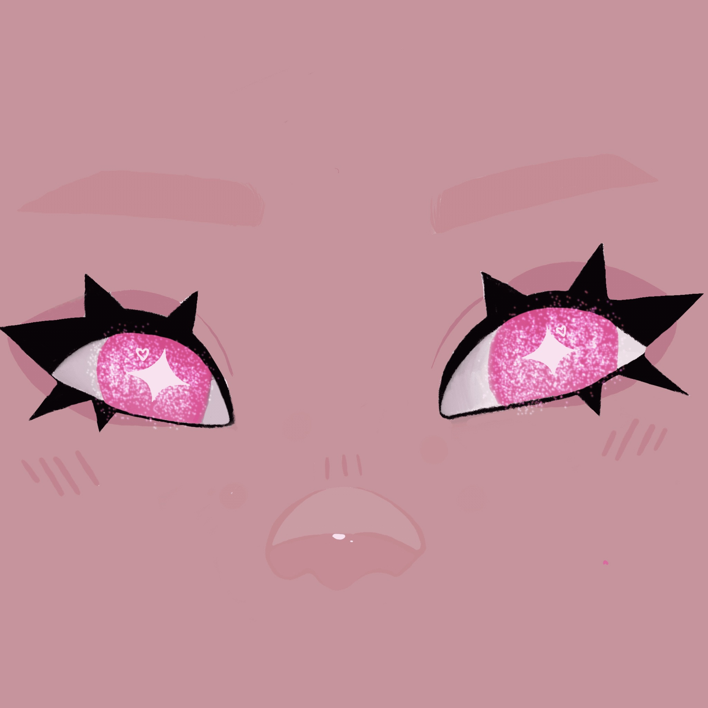
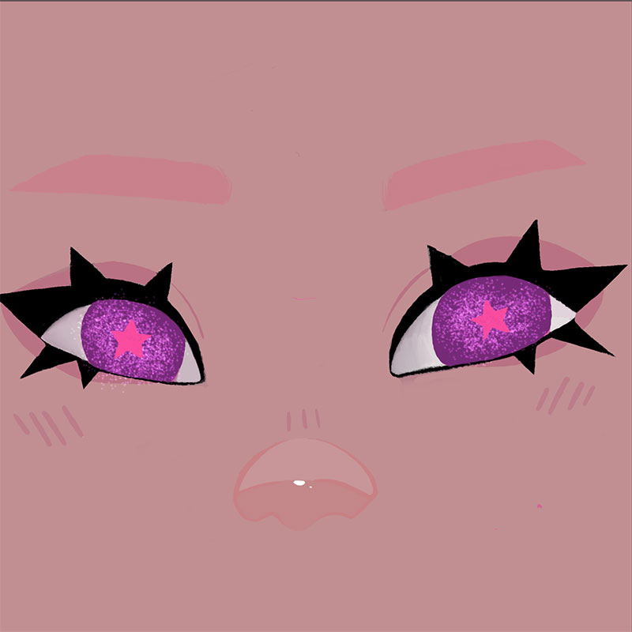
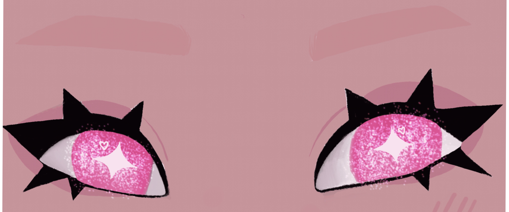
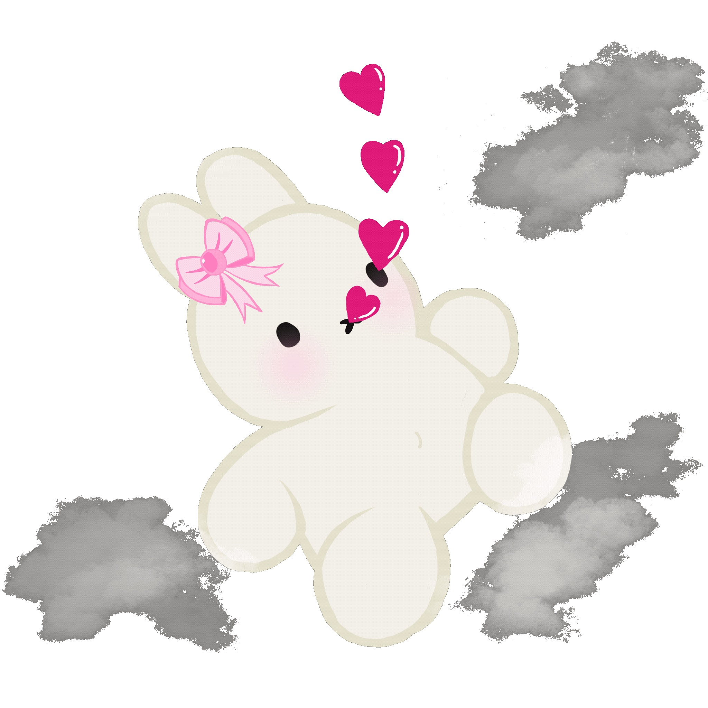

My Work
Recent Works

Behind The Screen
Behind The Screen, 2026. Explores digital privacy and survelliance through an "uncomfortable" interactive interface. View website
HTML, CSS, and JavaScript.
Key features: Interactive DOM manipulation, custom CSS animations, and a symbolic input field to represent the trade-off between privacy and engagement.

It's Ok
A sneak peek of a project very close to my heart. With finals season in full swing, I wanted to visualize the mental load we all carry. This series is a reminder to breathe, slow down the "system," and focus on just one thing at a time.

Fun Projects ★
Many of these artworks are created in Procreate.

Reflection
I tend to focus more on personal reflection, expressing it through my artwork.

Digital Self
Rather than a literal portrait, I wanted to capture how I perceive my own energy and identity in a digital space.

Pink Girl
Just a fun quick sketch.
Animation and GIFs



Starstrucked
